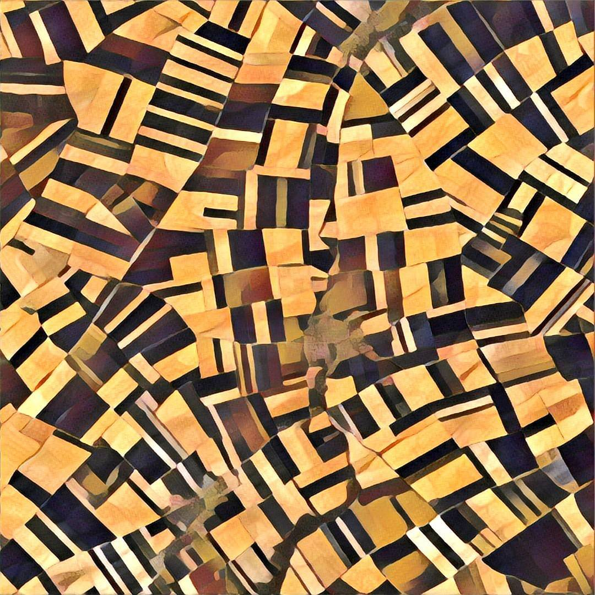

Drawing the planet in brushstrokes

To take my mind off certain things, I’ve been experimenting with a novel style of cartography: cubism.
I arrived here on a wave of hype via an app called Prisma — a nifty take on the “filter-and-share” photo paradigm; it applies a touch of machine learning to redraw your image in an array of artistic styles. You’ve definitely seen the results in the wild, sometimes stunning, sometimes godawful, usually determined by the quality of the source image.
After fiddling with the app for a few weeks and finding its limitations, on a whim I tried piping a satellite image through it.
And it worked.
With some minor adjustments, the landscape structure punched through the style while looking completely abstract — a memory of the stone walls and crops in the fields of Northern France:
 Fields in Luyères, France
Aided by a trove of openly-licensed imagery from the ever-generous Planet Labs, I started abstracting sites worldwide. I was particularly drawn to a pair of styles that drew from the work of the French avant-garde polymath Francis Picabia. His large-scale pieces — and cubism more broadly — fit almost perfectly into the structure of the human-altered landscapes we can see from space. The deconstructionist tendency of cubism — break it apart and then piece it roughly back together — mirrors the patterns visible in agriculture and the built environment. We break apart the ground at all scales, and we put it back together, repurposed; human straightaways against nature’s arcs and bights.
 Francis Picabia, 1913, Catch as Catch Can, oil on canvas, 100.6 x 81.6 cm, Philadelphia Museum of Art
Francis Picabia, 1913, Catch as Catch Can, oil on canvas, 100.6 x 81.6 cm, Philadelphia Museum of Art
But using Prisma felt limiting very quickly. First was the simple issue of it being a black box — there’s no indication of the parameters used to tune the model, nowhere to include weights or adjustments. Second — and more of a practical problem — was the fact that prisma outputs at a maximum image size of 1080px wide, which is mostly unsuitable for printing.
Fortunately, Prisma — at least as far as I can tell — is simply a consumer-friendly wrapper built on an excellent open-source toolkit by Justin Johnson called Neural Style. Relatively straightforward to implement on a laptop (or wherever, from a Docker container), the software invokes a convolutional neural network to understand the structure and style of the inputs before doing its best to aggregate them.
 Dubai international airport, deconstructed
Dubai international airport, deconstructed
After some configuration struggles (NVIDIA is so hot right now, but man their GPU drivers are sometimes painful to use), I began making these images on my own server, free from the Prisma TOU and scale. My current implementation of the code is now stocked with satellite imagery. There are endless possibilities.
I am not an artist; I make these pieces with some of my own sensibility expressed as a series of command line arguments — switches and weights. I’m amalgamating the true work that undergirds it: the paintcraft of Picabia, the code of Justin Johnson, the scientists who built the neural network, and the orbiting satellites of Planet Labs (and USGS, so far). But in a way, this is meta-cubism: aided by machines, I am pulling apart composed materials and putting them back together, slightly rearranged. I would hope that this would raise at least a smirk from Picabia before he would throw a drink in my face.
 Pivot irrigation outside Aruanã, Brazil
Pivot irrigation outside Aruanã, Brazil
(You can check out the complete gallery here.)